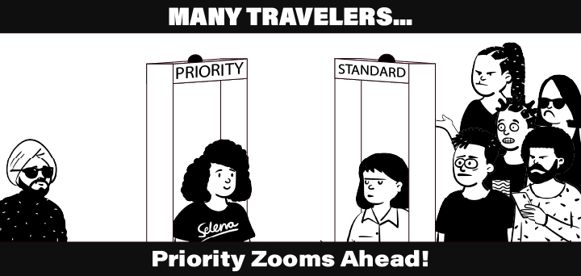
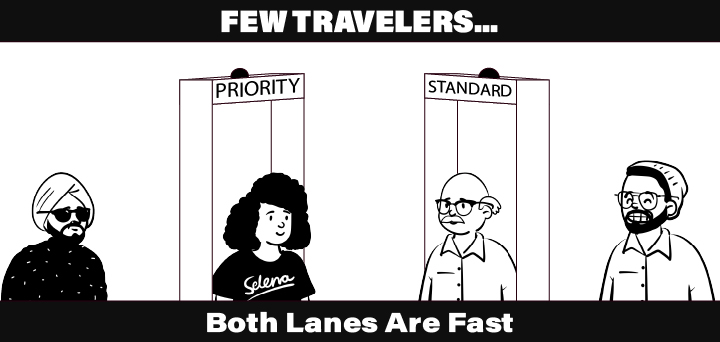

Zcash Dynamic Fees, Now!

Today, Zcash transactions use a fixed fee model based on transaction complexity. This creates a “Goldilocks zone” in the price of ZEC: fees need to be high enough to discourage spam, but low enough that users still want to transact.
But since the price of ZEC is now rising, we are moving outside that zone. That means it’s time for a dynamic fee system that is free-market based, simple, and private. One where:
- Users can still send transactions even in an overload situation (such as the previous sandblasting situation).
- Fees support sustainability of ZEC and the Zcash network.
- Users can pay more or less for different classes of service.
- The fee system protects the user’s privacy.
- Fees stay low for normal users under normal circumstances.
- The design stays simple to minimize risks of security, privacy, or other unforeseen consequences.
- The implementation deploys incrementally, and within current mainnet parameters. No network update required.
- Core consensus logic stays isolated from the fee system, so these changes can’t cause consensus forks.
This is achievable this year, with three steps: wallet features that put choices in front of users, an RPC endpoint that suggests fees from on-chain data, and a few reasonable parameter changes.
Wallet Feature Pilots
There are two features wallets can (and in our opinion should) experiment with today to get the ball rolling on dynamic fees: priority delivery, and “speed up” semantics.
Priority Delivery
Before submitting a transaction, the wallet can offer the user the option to pay a 4x fee to incentivize miners to include it sooner. That way, when block space is in demand, a priority transaction lands quickly. For anything time-sensitive (settlement, payroll, merchant tooling, refunds), prompt inclusion is the most meaningful discretion we can offer.
Even though the Zcash network is, at the time of this writing, generally very uncongested you can think of “Priority” working like the security line at the airport.

Graphics by https://openpeeps.com
Graphics by https://openpeeps.com
We think this is a reasonable trade-off. The fee reveals minimal information: only whether the shielded transaction came with the standard fee or the priority fee.
Also, once the Network Sustainability Mechanism activates with NU7, 60% of every transaction fee is removed from circulation and re-issued later. That elevates the priority feature from a mere UX benefit to a contribution towards the Zcash network’s long-term security.
“Speed Up” Semantics
Today, a stuck Zcash transaction sits in the mempool until its expiry, or forever if no expiry is set. A short expiry height (e.g. 2 blocks under current mainnet, or 5 under the proposed ZIP-218 changes) guarantees the transaction either lands fast or fails fast.
If a transaction fails, wallets can offer a “Speed Up” button which is familiar UX to Bitcoin and Ethereum users. Zcash doesn’t support Replace-By-Fee (RBF), so the wallet simply broadcasts a fresh transaction at the priority fee. The user doesn’t need to reason about the mempool.
We’re proud to announce that Unstoppable Wallet has stepped up to be the first to experiment with these features. We also have feelers out to several other wallets.
If you’re a wallet developer interested in working with us, reach out.
The Fee Suggestion Endpoint (z_getstandardfee)
Once those pilots are producing mainnet data, we’ll ship a dynamic fee estimator: an RPC endpoint, z_getstandardfee, that returns a recommended standard fee for everyday sends based on recent blocks. Wallets offer this fee to users and let users choose to 4x it for priority delivery.
Crucially, the endpoint is a suggestion, not a consensus rule. However, the more wallets that consistently use it, the more consistent the cross-wallet UX and the greater the privacy benefits.
Parameter Tuning
All of the above works within today’s ZIP-317 parameters. Two of those are also worth a fresh look now that ZEC has appreciated: the marginal fee (currently 5,000 zatoshi per action) and the block-production weight-ratio cap (currently 4.0).
- Lower the marginal fee from 5,000 zatoshi to 1,000 to lower fees overall, while still staying above the spam threshold.
- Raise the weight-ratio cap from 4.0 to 10.0 to clear demand spikes.
These parameters also have the aesthetic benefit of being powers of 10, which are easy to understand and explain.
Conclusion
Dynamic fees do not need to arrive all at once, and they do not need to come from consensus changes. By starting with wallet UX, fee estimation, and incremental parameter tuning, Zcash can move toward a fee market that better handles changing network conditions while preserving simplicity and privacy. We’re looking forward to testing these ideas on mainnet this year and welcome feedback from the community.
Cross-posted to the Zcash Community Forums and Twitter/X.